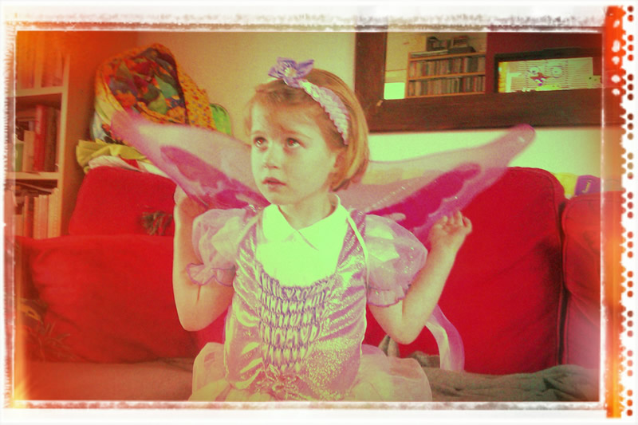

Imagen responsiva
Con srcset y sizes, el navegador descarga la versión de 480 px en pantallas pequeñas y la de 800 px en las grandes.

<img src="elva-fairy-800w.jpg"
srcset="elva-fairy-480w.jpg 480w,
elva-fairy-800w.jpg 800w"
sizes="(max-width: 40rem) 100vw, 40rem"
alt="Niña disfrazada de hada">Vídeo con subtítulos
Dos formatos (WebM y MP4), imagen de portada y pistas de subtítulos en español y catalán. Activa los subtítulos desde los controles del reproductor.
Audio
El navegador usa el primer formato que pueda reproducir: OGG o MP3.